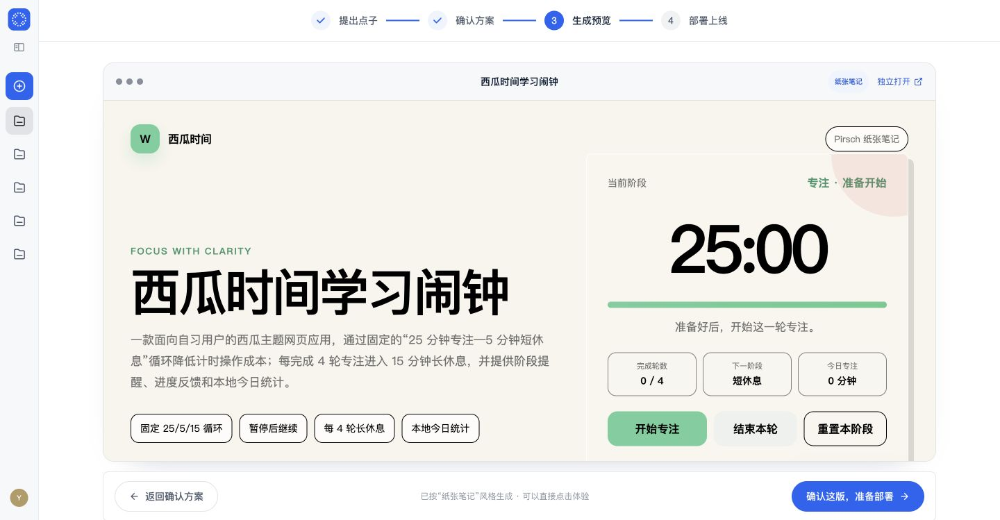
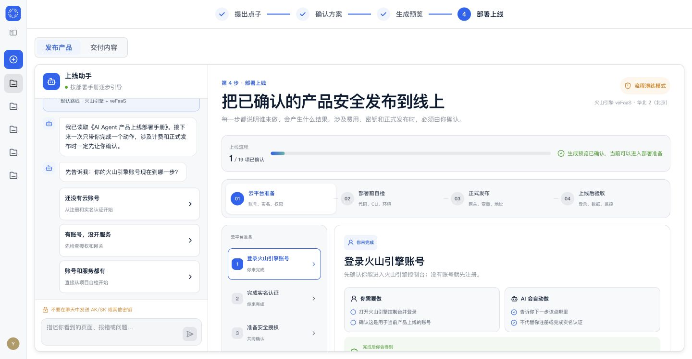

提出点子
用对话和附件补齐真实需求，生成一份可检查的完整 PRD。
产物 · 已确认 PRD先澄清 PRD，再用低保真故事板确认方案；选择 UI 风格后生成真实 HTML，最后通过可解释的部署流程完成上线准备。
每一步都有清楚的用户决策和可带走的阶段产物。
用对话和附件补齐真实需求，生成一份可检查的完整 PRD。
产物 · 已确认 PRD通过低保真页面故事板确认关键流程、页面状态和首版范围。
产物 · 可视化产品方案读取 PRD、方案和 UI 风格，生成真实 HTML 并开放点击体验。
产物 · 可交互 Web 产品左侧助手逐步引导，右侧完成云资源、费用和上线后验收。
产物 · 上线地址与交付物这不是模糊占位图，而是当前版本在 Chrome 中运行的真实页面截图。

左侧通过聊天确认账号起点和问题，右侧按上线手册推进云平台准备、部署前自检、正式发布与上线后验收。

历史阶段已清理，仓库只包含当前运行版本。
四步产品工作台、低保真方案、UI 风格选择、HTML 预览与部署助手。
PRD、任务、质量门、预览、凭证加密、部署授权、交付与多用户运营。
README 中包含本地启动、环境变量和测试方式。
打开 GitHub 仓库 ↗